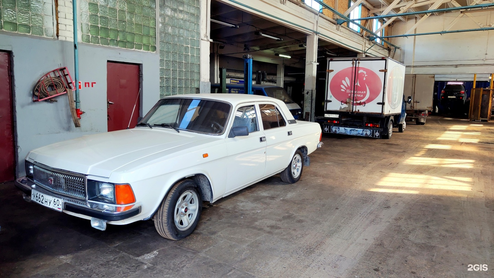
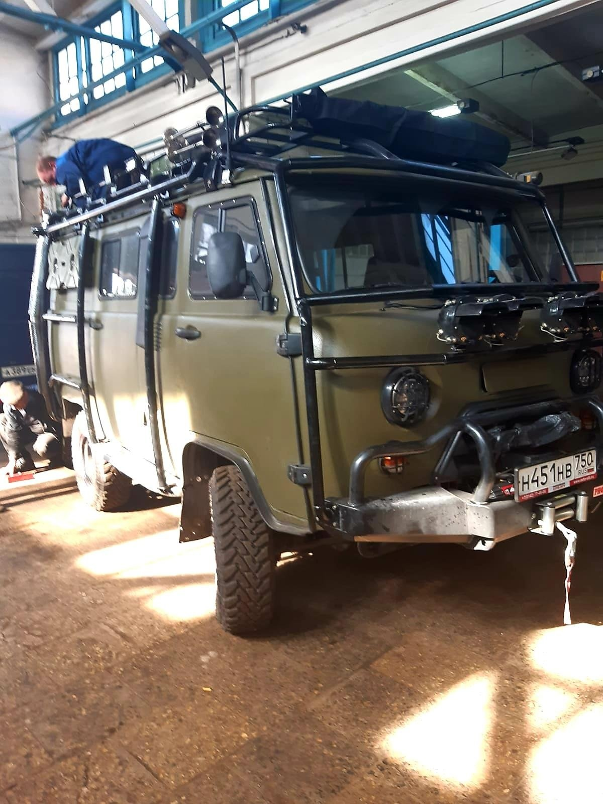
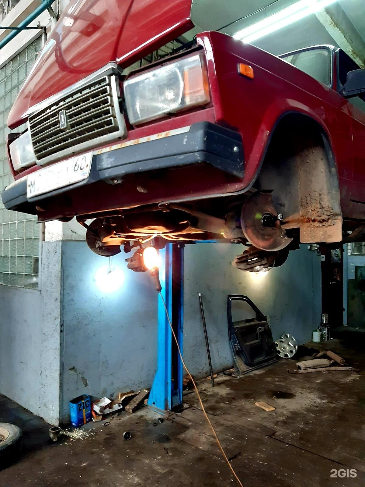
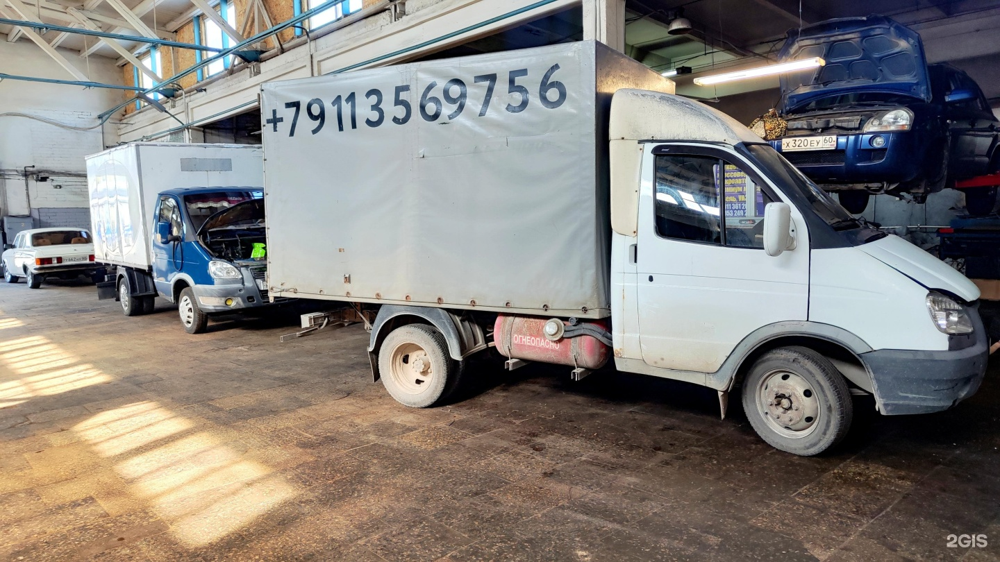

Автосервис и запчасти для отечественных автомобилейЦентр
Наша Волга
Ремонт и запчасти для отечественных автомобилей
Ремонт кузова, ходовой и двигателя, покраска и сварка. Запчасти для Lada (ВАЗ), ГАЗ и УАЗ уточните по телефону.

Часы работы
- Пн–Пт 08:00–12:00, 13:00–17:00
Рейтинг
4.6 из 5 · 9 оценок в 2ГИСДемо-концепт · текущий прайс ещё не подтверждён
Отечественные автомобили
Кузовной ремонт
Ремонт ходовой части автомобиля
Ремонт двигателей
Покраска
Сварка
Запчасти для Lada (ВАЗ), ГАЗ и УАЗ
Уточните ремонт или наличие запчастей
ПозвонитьЧто отмечают клиенты
Один из клиентов положительно оценивает диагностику и ремонт автомобиля ВАЗ.
В отзыве о ремонте Газели отмечают оперативную работу и внимание к пожеланиям клиента.
Ещё в одном отзыве сервис рекомендуют владельцам отечественных автомобилей.
Пересказ мнений посетителей без имён авторов. Все отзывы в 2ГИС
Услуги и цены
Сервис на фотографиях



Как нас найти
Псков, Вокзальная улица, 22 к1
Центр
Часы работы
- Пн–Пт 08:00–12:00, 13:00–17:00
Телефон
+7 (921) 214-51-50